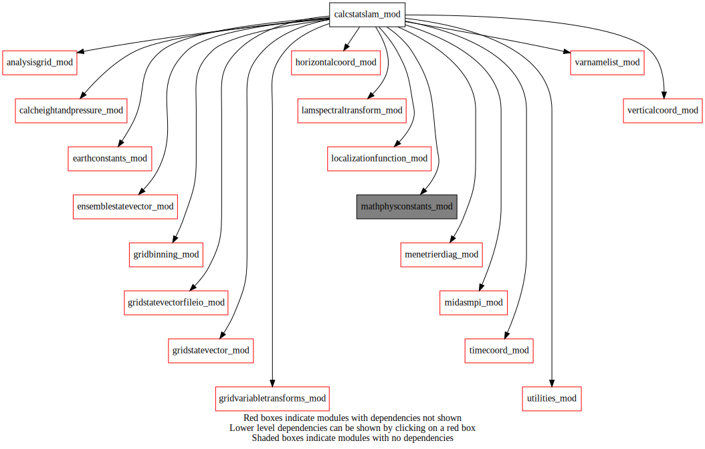
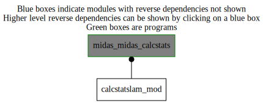

Dependency Diagrams:
 Direct Dependency Diagram¶
 Reverse Dependency Diagram¶
Description
MODULE calcStatsLam_mod (prefix=’csl’ category=’1. High-level functionality’)
- Purpose
To compute homogeneous and isotropic background error covariances from forecast error estimate in model variable space (limited-area version).
Quick access
- Routines
applyhorizloc(),applyvertloc(),calcbsqrt(),calchorizscale(),calclocalcorrelations(),calcspectralstats(),calctotvertcorrel(),calcvertcorrel(),csl_computebhi(),csl_setup(),csl_toolbox(),horizcorrelfunction(),normalizepowerspectrum(),scalestddev(),setspvertcorrel(),writecontrolvarinfo(),writediagstats(),writehorizscale(),writepowerspectrum(),writepressureprofiles(),writespvertcorrel(),writetotvertcorrel(),writevarstats()Needed modules
mathphysconstants_mod: MODULE MathPhysConstants_mod (prefix=’mpc’ category=’8. Low-level utilities and constants’)
earthconstants_mod: MODULE earthConstants_mod (prefix=’ec’ category=’8. Low-level utilities and constants’) Prefixes: ec_ (Earth constants), for miscellaneous values from diverse sources
gridstatevector_mod: MODULE gridStateVector_mod (prefix=’gsv’ category=’6. High-level data objects’)
gridstatevectorfileio_mod: MODULE gridStateVectorFile_mod (prefix=’gio’ category=’4. Data Object transformations’)
lamspectraltransform_mod: MODULE lamSpectralTransform_mod (prefix=’lst’ category=’4. Data Object transformations’)
analysisgrid_mod: MODULE analysisGrid_mod (prefix=’agd’ category=’7. Low-level data objects’)
horizontalcoord_mod: MODULE HorizontalCoord_mod (prefix=’hco’ category=’7. Low-level data objects’)
verticalcoord_mod: MODULE verticalcoord (prefix=’vco’ category=’7. Low-level data objects’)
localizationfunction_mod: MODULE localizationFunction_mod (prefix=’lfn’ category=’2. B and R matrices’)
utilities_mod: MODULE utilities_mod (prefix=’utl’ category=’8. Low-level utilities and constants’)
menetrierdiag_mod: MODULE menetrierDiag_mod (prefix=’bmd’ category=’1. High-level functionality’)
ensemblestatevector_mod: MODULE ensembleStateVector_mod (prefix=’ens’ category=’6. High-level data objects’)
gridvariabletransforms_mod: MODULE gridVariableTransforms (prefix=’gvt’ category=’4. Data Object transformations’)
varnamelist_mod: MODULE varNameList (prefix=’vnl’ category=’7. Low-level data objects’)
gridbinning_mod: MODULE gridBinning_mod (prefix=’gbi’ category=’4. Data Object transformations’)
timecoord_mod: MODULE timeCoord (prefix=’tim’ category=’7. Low-level data objects’)
midasmpi_mod: MODULE midasMpi_mod (prefix=’mmpi’ category=’8. Low-level utilities and constants’)
calcheightandpressure_mod: MODULE czp_calcHeightAndPressure (prefix=’czp’ category=’4. Data Object transformations’)Types
- type calcstatslam_mod/unknown_type¶
- Type fields
% gridtype [character ]
% ip1 (*) [integer ,allocatable]
% nlev [integer ]
% nomvar (2) [character ]
% varlevindexend [integer ]
% varlevindexstart [integer ]
- type calcstatslam_mod/unknown_type
- Type fields
% controlvariable (nmaxcontrolvar) [struct_cv ]
% momentumcontrolvar (2) [character ]
% ncontrolvariable [integer ]
% nvarlev [integer ]
Variables
Subroutines and functions
- subroutine calcstatslam_mod/csl_setup(nens_in, hco_ens_in, vco_ens_in, ip2_in)¶
- Purpose
To initialize this module
- Arguments
nens_in [integer ,in]
hco_ens_in [struct_hco ,in,pointer]
vco_ens_in [struct_vco ,in,pointer]
ip2_in [integer ,in]
- Called from
- Call to
utl_abort(),agd_createlamtemplategrids(),hco_setupfromfile(),agd_setupfromhco(),ens_allocate(),ens_readensemble(),ens_varexist(),ens_varnameslist(),vnl_varlevelfromvarname(),ens_getnumlev(),ens_getoffsetfromvarname(),ens_getnumk(),ens_writeensemble(),ens_modifyvarname(),ens_computemean(),ens_removemean(),ens_computestddev()
- subroutine calcstatslam_mod/csl_computebhi()¶
- Purpose
To compute an homogeneous and isotopic B matrix
- Called from
- Call to
ens_varnameslist(),gsv_allocate(),ens_getnumstep(),ens_gethco(),ens_getvco(),tim_getdatestamp(),gbi_setup(),ens_normalize(),calcspectralstats(),calchorizscale(),calctotvertcorrel(),setspvertcorrel(),calcbsqrt(),scalestddev(),writevarstats(),ens_copyensmean(),ens_copyensstddev(),writediagstats(),ens_deallocate(),gsv_deallocate()
- subroutine calcstatslam_mod/csl_toolbox()¶
- Purpose
High-level control of various diagnostic tools
- Called from
- Call to
ens_normalize(),calcvertcorrel(),calcspectralstats(),horizcorrelfunction(),ens_varnameslist(),gsv_allocate(),ens_getnumstep(),ens_gethco(),ens_getvco(),tim_getdatestamp(),ens_copyensstddev(),gio_writetofile(),gsv_deallocate(),calclocalcorrelations(),bmd_setup(),bmd_localizationradii(),utl_abort(),writepressureprofiles(),ens_deallocate()
- subroutine calcstatslam_mod/calcspectralstats(ensperts, spvertcorrel, powerspectrum, normb)¶
- Purpose
To compute background-error covariances in spectral space from an ensemble of gridded data
- Arguments
ensperts [struct_ens ]
spvertcorrel (bhi%nvarlev,bhi%nvarlev,ntrunc)+1) [real ,out]
powerspectrum (bhi%nvarlev,ntrunc)+1) [real ,out]
normb (bhi%nvarlev,bhi%nvarlev,ntrunc)+1) [real ,out]
- Called from
- Call to
lst_setup(),ens_getlatlonbounds(),ens_getonelev_r4(),lst_vartransform(),applyvertloc(),normalizepowerspectrum(),applyhorizloc()
- subroutine calcstatslam_mod/normalizepowerspectrum(powerspectrum, normpowerspectrum)¶
- Purpose
To convert spectral variances into spectral correlations
- Arguments
powerspectrum (bhi%nvarlev,ntrunc)+1) [real ,in]
normpowerspectrum (bhi%nvarlev,ntrunc)+1) [real ,out]
- Called from
- Call to
- subroutine calcstatslam_mod/calchorizscale(horizscale, spcovariance)¶
- Purpose
To compute horizontal lenght scales based on the power spectra
- Arguments
horizscale (bhi%nvarlev) [real ,out]
spcovariance (bhi%nvarlev,bhi%nvarlev,ntrunc)+1) [real ,in]
- Called from
- subroutine calcstatslam_mod/calctotvertcorrel(totvertcorrel, spvertcorrel, powerspectrum)¶
- Purpose
To compute the total vertical correlations (i.e. gridpoint equivalent)
- Arguments
totvertcorrel (bhi%nvarlev,bhi%nvarlev) [real ,out]
spvertcorrel (bhi%nvarlev,bhi%nvarlev,ntrunc)+1) [real ,in]
powerspectrum (bhi%nvarlev,ntrunc)+1) [real ,in]
- Called from
- subroutine calcstatslam_mod/calcbsqrt(bsqrt, b)¶
- Purpose
To compute the sqare-root of B
- Arguments
bsqrt (bhi%nvarlev,bhi%nvarlev,ntrunc)+1) [real ,out]
b (bhi%nvarlev,bhi%nvarlev,ntrunc)+1) [real ,in]
- Called from
- Call to
- subroutine calcstatslam_mod/setspvertcorrel(spvertcorrel)¶
- Purpose
To discard some user-defined cross-correlations
- Arguments
spvertcorrel (bhi%nvarlev,bhi%nvarlev,ntrunc)+1) [real ,inout]
- Called from
- subroutine calcstatslam_mod/calcvertcorrel(ensperts)¶
- Purpose
To compute vertical correlations from an ensemble of gridded data
- Arguments
ensperts [struct_ens ]
- Called from
- Call to
ens_getlatlonbounds(),ens_getonelev_r4(),writetotvertcorrel()
- subroutine calcstatslam_mod/horizcorrelfunction(normb)¶
- Purpose
To compute and write the horizontal correlation function of every variables and levels in the correlation formulation of the B matrix (i.e. C matrix)
- Arguments
normb (bhi%nvarlev,bhi%nvarlev,ntrunc)+1) [real ,in]
- Called from
- Call to
ens_varnameslist(),gsv_allocate(),ens_getnumstep(),ens_getvco(),tim_getdatestamp(),lst_setup(),lst_vartransform(),gio_writetofile(),gsv_deallocate()
- subroutine calcstatslam_mod/applyhorizloc(normpowerspectrum)¶
- Purpose
To apply horizontal localization to the spectral correlations
- Arguments
normpowerspectrum (bhi%nvarlev,ntrunc)+1) [real ,inout]
- Called from
- Call to
lst_setup(),lst_vartransform(),lfn_setup(),lfn_createbiperfunction(),normalizepowerspectrum()
- subroutine calcstatslam_mod/applyvertloc(spvertcorrel)¶
- Purpose
To apply vertical localization to the spectral correlations
- Arguments
spvertcorrel (bhi%nvarlev,bhi%nvarlev,ntrunc)+1) [real ,inout]
- Called from
- Call to
- subroutine calcstatslam_mod/scalestddev(statevector_stddev)¶
- Purpose
To scale the gridpoint background-error standard deviations
- Arguments
statevector_stddev [struct_gsv ,inout]
- Called from
- Call to
gsv_getnumk(),gsv_getvarnamefromk(),gsv_getlevfromk(),vnl_varlevelfromvarname()
- subroutine calcstatslam_mod/writevarstats(bsqrt, statevector_stddev)¶
- Purpose
To write data needed for VAR applications, i.e C^1/2 and stdDev
- Arguments
bsqrt (bhi%nvarlev,bhi%nvarlev,ntrunc)+1) [real ,in]
statevector_stddev [struct_gsv ]
- Called from
- Call to
gio_writetofile(),writecontrolvarinfo(),writespvertcorrel()
- subroutine calcstatslam_mod/writediagstats(normb, spvertcorrel, totvertcorrel, statevector_mean, statevector_stddevgridpoint, powerspectrum, horizscale)¶
- Purpose
To write other relevant data computed during the calculation of Bhi that are not needed for VAR applications
- Arguments
normb (bhi%nvarlev,bhi%nvarlev,ntrunc)+1) [real ,in]
spvertcorrel (bhi%nvarlev,bhi%nvarlev,ntrunc)+1) [real ,in]
totvertcorrel (bhi%nvarlev,bhi%nvarlev) [real ,in]
statevector_mean [struct_gsv ]
statevector_stddevgridpoint [struct_gsv ]
powerspectrum (bhi%nvarlev,ntrunc)+1) [real ,in]
horizscale (bhi%nvarlev) [real ,in]
- Called from
- Call to
gio_writetofile(),writespvertcorrel(),writetotvertcorrel(),writepowerspectrum(),writehorizscale()
- subroutine calcstatslam_mod/writespvertcorrel(spvertcorrel, iun, nomvar_in, etiket_in)¶
- Purpose
To write vertical correlations in spectral space
- Arguments
spvertcorrel (bhi%nvarlev,bhi%nvarlev,ntrunc)+1) [real ,in]
iun [integer ,in]
nomvar_in [character ,in]
etiket_in [character ,in]
- Called from
- subroutine calcstatslam_mod/writetotvertcorrel(totvertcorrel, iun, nomvar_in, etiket_in)¶
- Purpose
To write the total vertical correlations (i.e. gridpoint equivalent)
- Arguments
totvertcorrel (bhi%nvarlev,bhi%nvarlev) [real ,in]
iun [integer ,in]
nomvar_in [character ,in]
etiket_in [character ,in]
- Called from
- subroutine calcstatslam_mod/writepowerspectrum(powerspectrum, iun, etiket_in, cv_type)¶
- Purpose
To write the power spectrum
- Arguments
powerspectrum (bhi%nvarlev,ntrunc)+1) [real ,in]
iun [integer ,in]
etiket_in [character ,in]
cv_type [integer ,in]
- Called from
- subroutine calcstatslam_mod/writehorizscale(horizscale, iun, etiket_in, cv_type)¶
- Purpose
To write the horizontal lenght scales
- Arguments
horizscale (bhi%nvarlev) [real ,in]
iun [integer ,in]
etiket_in [character ,in]
cv_type [integer ,in]
- Called from
- subroutine calcstatslam_mod/writecontrolvarinfo(iun)¶
- Purpose
To write the control variable related info
- Arguments
iun [integer ,in]
- Called from
- subroutine calcstatslam_mod/writepressureprofiles()¶
- Purpose
To write the MM and TH pressure profiles used for vertical localization
- Called from
- subroutine calcstatslam_mod/calclocalcorrelations(ensperts)¶
- Purpose
To compute the local horizontal correlation for some ‘reference’ grid points
- Arguments
ensperts [struct_ens ]
- Called from
- Call to
ens_varnameslist(),gsv_allocate(),ens_getnumstep(),ens_gethco(),ens_getvco(),tim_getdatestamp(),gsv_zero(),ens_copymember(),gsv_transposetilestovarslevs(),gsv_scale(),gio_writetofile(),gsv_deallocate()
{kind=link}
{kind=link}